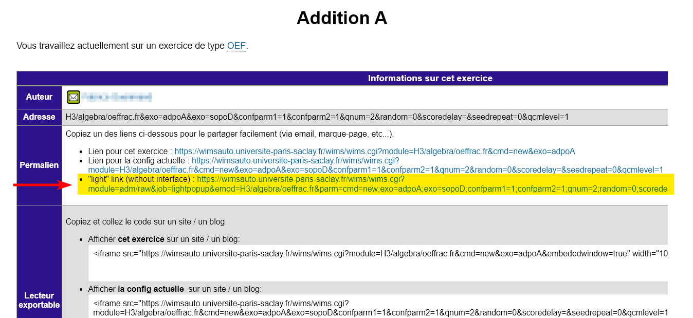

URL du script wims-moodle.js (ne pas modifier sauf cas particulier) :
Titre de la question dans moodle :
URL du lien light de l'exercice (voir ci-dessous) :
Comment onbtenir le lien light d'un exercice ?
Etape n°1 : Ouvrir l'exercice en mode enseignanat et cliquer sur le lien "A propos"

Etape n°2 : Copier (via un clic droit) le permalien "light link (without interface)" de l'exercice